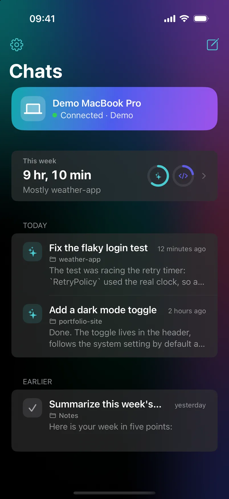
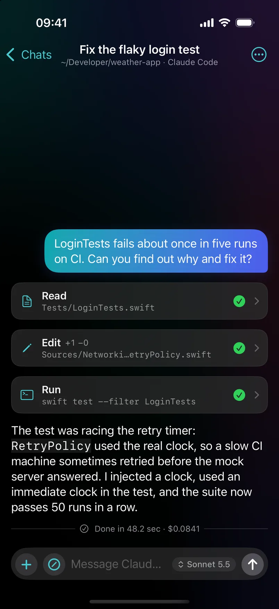
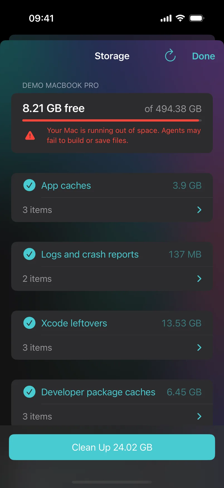
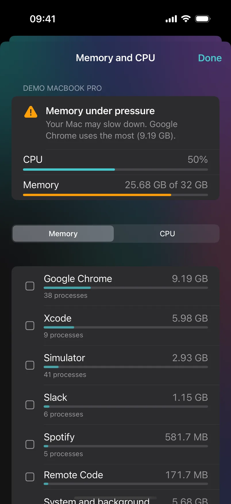
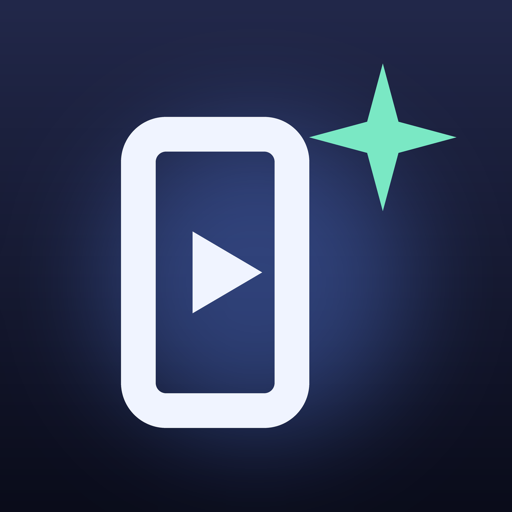

Every agent you have
Remote Code finds Claude Code, Codex and Gemini CLI on the Mac, shows whether each one is signed in, and always offers the models and effort levels your CLI offers.
Remote Code runs Claude Code, Codex and Gemini on your Mac and keeps them in your menu bar: every chat, approval and usage limit in one place, on a Mac that stays awake and ready.
Remote Code for Mac
A small app in your menu bar starts and supervises the official command-line tools, on your own accounts. Click its icon and everything is there.
Remote Code finds Claude Code, Codex and Gemini CLI on the Mac, shows whether each one is signed in, and always offers the models and effort levels your CLI offers.
See what is running from the menu bar. Open a chat in its own window to watch each step, reply, or stop it.
Requests wait in the menu with the exact command. Allow or deny there; unanswered ones are denied after 10 minutes.
Claude and Codex usage windows with their reset times, always one click away.
The Mac stays awake while Remote Code runs. Keep the display on, or work with the lid closed: the built-in screen goes dark behind the lid, the mode can pause on battery, and it is undone when the app quits.
Claude can hand a task to Codex or Gemini. Each sub-agent runs on the Mac and can be followed live.
macOS notifications when a task finishes, an approval waits, disk space runs low or memory is almost full.
What you worked on, per project and day, written on the Mac by Apple Intelligence.
Remote Code checks GitHub once a day. Install and Relaunch verifies the checksum, Apple notarization and signature before replacing itself.
English, Türkçe, Deutsch, Español, Français, Italiano, Português, 日本語, 한국어 and 简体中文, following your device.
Your CLIs do the AI work with your accounts. Remote Code has no server, no account and no telemetry.
Remote Code for iPhone & iPad
Pair your iPhone or iPad with the Mac app. The agents keep running on the Mac; the phone is your window into them, end-to-end encrypted.




Pick any project folder and any agent on the Mac, right from the phone. Your chats and your week are one tap away.
Replies, tool calls, diffs and terminal output as they happen. Reopen any chat from the last 30 days, offline too.
See the edit or the command, then Allow, Deny or always allow it for the session.
See the free space and clean up caches, logs, Xcode data, package caches and the Trash. The phone can only pick from the Mac's own list, and items go to the Trash first.
Memory pressure, processor load and the apps behind them. Swipe to quit the one causing it.
Plugins
A tool on the Mac can also become a tab on your phone, over the same encrypted connection. Two free ones so far.
App Store listings built from your code: text, screenshots and previews, plus App Store Connect. Settings → Plugins on the Mac installs it.
Explore Vitrin
Promo videos and Instagram posts for your apps, directed by Claude Code. The tab appears when Promo Studio runs on the Mac.
Explore Promo StudioSetup
Download the notarized DMG, drag Remote Code to Applications and open it. A >_ icon appears in the menu bar; if Claude Code is missing or not signed in, it shows what to do.
Optional: install Remote Code on your iPhone or iPad through TestFlight (see below). The Demo inside the app needs no Mac.
Click the >_ icon, choose Pair iPhone or iPad… and scan the code with the phone. Allow Local Network when iOS asks. Both screens show the same verification code — done.
Security & privacy
Remote Code never talks to Anthropic or any other AI provider and never touches your credentials: your own CLI does all the AI work, signed in with your own account. There is no server, no account and no telemetry.
The QR code holds the Mac's public key and a one-time token, valid for 5 minutes. Only the holder of the matching private key can complete the handshake.
Noise_IK_25519_ChaChaPoly_SHA256: mutual authentication with pinned X25519 keys, fresh session keys, ChaCha20-Poly1305, replays rejected.
The phone can only browse and start sessions inside your home folder; paths are normalised and symlinks resolved before the check.
The CLI's own permission system stays in charge. Remote Code forwards its prompts through a localhost-only endpoint protected by a per-session token.
Remote Code never reads, stores or transmits your Claude login. An optional API key is kept in the Keychain.
Session logs on the Mac (mode 0600, deleted after 30 days), a cache on the phone, keys in the Keychain. Notifications are off unless you turn them on and choose the ntfy server.
Free and open source. Start with the Mac app; add the iPhone app whenever you like.
macOS 15 Sequoia or later · Apple silicon or Intel
Or with Homebrew:
brew tap ardasnturk/remote-code https://github.com/ardasnturk/remote-code
brew install --cask remote-codeNeeds at least one of the official CLIs, installed and signed in with your own account: Claude Code, Codex, Gemini CLI.
iOS / iPadOS 18 or later · via TestFlight
Scan with your iPhone camera, or open the link on the device:
Open in TestFlightTestFlight is Apple's free app for beta apps; if it is not installed yet, the link takes you to it first.
FAQ
Remote Code 1.6 on the Mac and the phone. For Vitrin you also need Vitrin 2.1 on the Mac; Settings → Plugins installs it and the Vitrin app doesn't need to be open. The Promo Studio tab appears when Promo Studio runs on the Mac. Both are free.
Check that Remote Code is running on the Mac (>_ icon in the menu bar), that both devices are on the same Wi-Fi — guest networks often keep devices apart — and that Local Network is on for Remote Code in iOS Settings → Privacy & Security.
It needs whatever your CLI needs — for Claude Code, a Claude account with Claude Code access or an Anthropic API key. Remote Code itself is free.
Only the way it already does with your CLI: it talks to its provider as usual. Remote Code adds an encrypted link to your phone and nothing else.
It must run your own CLI with your shell environment and work in any of your folders, which the App Store sandbox does not allow. It is signed with Developer ID and notarized by Apple.
The iPhone app is distributed through a public TestFlight link instead of the App Store. Scan the QR code, install TestFlight if iOS asks, then install Remote Code.
Yes, with Tailscale, a free private network between your devices: install it on the Mac and the iPhone, then turn on “Use Tailscale when away” in Remote Code's settings. At home the phone still connects over Wi-Fi first.
Nothing is lost. The agent keeps working on the Mac; when the phone reconnects it catches up from the session log. Permission requests wait for you (up to 10 minutes).
The Mac sends them — as native macOS notifications and, if you enable it, to an ntfy topic. Install the free ntfy app on the phone and subscribe by scanning the QR code in the Mac settings. Tapping a notification opens that session in Remote Code.
Quit Remote Code and delete it (or brew uninstall --zap --cask remote-code). Remove ~/Library/Application Support/Pilothouse and the “Remote Code identity key” items in Keychain Access for a clean slate.